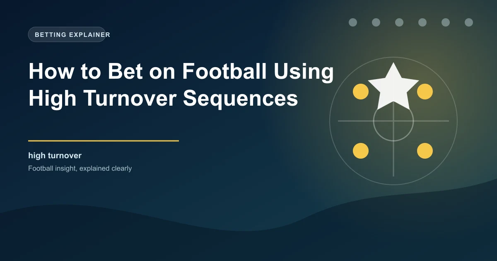

In modern football, the moments immediately following a turnover of possession are among the most dangerous and decisive phases of play. When a team wins the ball back from the opposition, the opposing team is often disorganised, stretched, and vulnerable to a rapid counter-attack. Teams that excel at creating high turnover sequences, winning the ball back in advanced positions and immediately transitioning into attack, generate a disproportionate number of their goals and scoring opportunities from these moments.
For bettors, understanding high turnover sequences and identifying which teams are most effective at exploiting them provides a valuable analytical framework. This guide will explain what high turnover sequences are, how they relate to goals and match outcomes, and how you can use turnover data to make more informed betting decisions.
A high turnover sequence occurs when a team wins possession from the opposition in an advanced area of the pitch, typically in the opponent's half or specifically in the final third. Unlike a standard ball recovery in your own defensive third, which requires the team to advance the ball 60-70 metres before creating a scoring opportunity, a high turnover places the recovering team immediately in a position to threaten the goal.
There are several types of high turnover sequences. The most common is the counter-pressing turnover, where a team loses the ball and immediately presses to win it back before the opposition can establish their attacking structure. Liverpool under Jurgen Klopp were masters of this, using their gegenpressing system to win the ball back within five seconds of losing it, often in the opponent's half.
Another type is the interception-based turnover, where a team reads the opposition's passing lanes and intercepts the ball in an advanced position. This type of turnover often leads to the most dangerous scoring opportunities because the intercepting player typically has space to drive forward while the opposition is still committed to their attacking shape.
The third type is the pressing trap, where a team deliberately allows the opposition to have the ball in a specific area before pressing collectively to win it back. This tactical approach, used by teams like RB Leipzig under Julian Nagelsmann and Brighton under Roberto De Zerbi, creates high turnover opportunities through structured tactical design rather than reactive pressing.
The effectiveness of high turnover sequences lies in the transitional chaos they create. When a team loses the ball while attacking, their players are typically positioned high up the pitch and are committed to forward movement. This attacking commitment leaves large spaces behind the pressing players, spaces that the recovering team can exploit through rapid forward passing or direct dribbling.
The speed of transition is the critical factor. Teams that can move the ball from the turnover to a shooting opportunity within five to eight seconds are significantly more likely to score than teams that take longer to organise their attack. This is because the opposition needs approximately eight to ten seconds to reorganise their defensive structure after losing the ball. The window of vulnerability is narrow, and teams that can exploit it consistently generate a high volume of dangerous chances.
The quality of the players in transition also matters enormously. Teams with fast, technically gifted players who can make quick decisions under pressure are naturally more effective at creating chances from turnovers. These players can carry the ball at speed, play incisive through balls, and finish accurately while moving, all within the brief window of opportunity that a high turnover creates.
Certain teams have built their tactical identity around the concept of winning the ball back high and transitioning quickly. Statistical analysis reveals that these teams share several common characteristics that bettors can identify and exploit.
First, high-turnover teams typically have lower possession percentages than their results would suggest. Because they are comfortable losing the ball in order to win it back in advantageous positions, they do not prioritise possession for its own sake. This can make them appear weaker on statistical models that weight possession heavily.
Second, these teams tend to have higher shot counts relative to their possession percentage. Each high turnover creates a quick shooting opportunity, meaning they generate shots in bursts rather than through sustained pressure. A team might have only 40% possession but register 15 shots because each turnover sequence produces a shot.
Third, the expected goals per shot (xG per shot) for high-turnover teams tends to be higher than average. Because high turnovers create situations where the defence is disorganised, the shots produced are typically higher quality than those from sustained possession attacks. A one-on-one with the goalkeeper following a turnover has a much higher xG value than a shot from the edge of the box after 20 passes.
Several teams across Europe's top leagues have built their tactical systems around high turnover sequences. Understanding which teams rely on turnovers for their attacking output helps bettors identify when this tactical factor is likely to influence a match.
Liverpool under Jurgen Klopp were the pioneers of modern counter-pressing. Their ability to win the ball back within seconds of losing it, combined with the pace and quality of their forward players, made them one of the most dangerous transition teams in football history. Even under new management, the counter-pressing DNA remains embedded in Liverpool's tactical approach.
RB Leipzig have consistently been one of the most turnover-heavy teams in the Bundesliga. Their high-intensity pressing system, combined with athletic players who can cover ground quickly, creates a constant stream of high turnover opportunities. Leipzig matches tend to be chaotic and high-scoring because both teams are committed to attacking.
Atalanta in Serie A have developed a unique tactical identity built around aggressive pressing and rapid transitions. Their 3-4-3 system pushes wing-backs high and presses collectively to win the ball in advanced positions. This approach has made Atalanta one of the most entertaining and statistically interesting teams in European football.
The relationship between high turnover sequences and match outcomes is well-documented. Teams that win more high turnovers than their opponents win approximately 60-65% of matches. This win rate is higher than the correlation for possession (55%) and comparable to the correlation for expected goals (65%).
More importantly for bettors, high turnover data is particularly predictive in certain match contexts. When two high-pressing teams face each other, the match tends to produce more goals than the pre-match odds suggest. This is because both teams are creating high turnover opportunities, leading to a chaotic, open match with chances at both ends.
Conversely, when a high-turnover team faces a low-block team that does not try to play out from the back, the turnover team's primary attacking weapon is neutralised. Without the opposition attempting to build from the back, there are fewer opportunities to press and win the ball in advanced positions. In these matches, the high-turnover team may struggle to create chances despite their usual statistical profile suggesting they should be dominant.
The timing of turnovers within a match also matters. High turnovers in the first 15 minutes tend to be less effective because both teams are still fresh and alert. High turnovers in the 60-75 minute window are the most dangerous because the pressing team is still energetic while the opposition is beginning to tire and lose concentration.
Here are five practical strategies that leverage high turnover data for betting advantage:
While high turnover sequences are a powerful analytical tool, they have specific limitations. Turnover effectiveness depends heavily on the quality of the players involved. A team with slow, technically limited players may press well but lack the quality to exploit the turnovers they create. Similarly, a team facing a turnover-heavy opponent can mitigate the threat by improving their own ball retention and reducing the number of turnovers they concede.
Turnover data can also be misleading when teams are protecting a lead. A team that is winning 2-0 may reduce their pressing intensity, leading to fewer high turnovers but a more controlled match. The drop in turnovers does not necessarily indicate a drop in quality; it reflects a change in tactical priority.
Finally, turnover-based analysis is less useful in matches where one team is significantly superior in quality. When a top team faces a lower-league opponent, the quality gap overwhelms the tactical dynamics, and turnover analysis becomes a secondary factor.
WinFulltime provides data-driven predictions that account for pressing intensity and transition play.
View Today's Predictions Win
Win